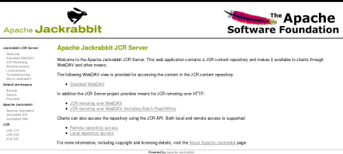

Standalone Server
Each Jackrabbit release comes with a pre-built and runnable standalone server jar. It's the easiest way to get started with Jackrabbit, simply download and start the jar to get a fully functional JCR content repository. The rest of this page documents what else you can do with the standalone server.
Running the standalone server
You need Java version 5 or higher to run the Jackrabbit standalone server. To start the server, double-click on the standalone jar file, or invoke it on the command line.
$ java -jar jackrabbit-standalone-1.6.0.jar Welcome to Apache Jackrabbit! ------------------------------- Using repository directory jackrabbit Writing log messages to jackrabbit/log Starting the server... Apache Jackrabbit is now running at http://localhost:8080/ ^C Shutting down the server... ------------------------------- Goodbye from Apache Jackrabbit!
After staring the server, you can point your browser to http://localhost:8080/ to see Jackrabbit in action. Use the --port command line option to specify an alternative if the default port 8080 is already used by another program.
This is what the server should look like in your browser:

By default the server will look for a content repository in the ./jackrabbit directory and a repository configuration file in a repository.xml file within the repository directory. The repository directory is automatically created if it does not already exist, and a configuration file with the default configuration is created if no configuration is found.
Server, access, and repository log messages are written to log files in the log subdirectory within the repository directory.
You can stop the server by pressing Ctrl-C or by sending it a standard termination signal. The server will then close the content repository and exit cleanly.
Command line options
You can customize the operation of the standalone server with the following command line options (with defaults in parenthesis).
$ java -jar jackrabbit-standalone-1.6.0.jar --help
usage: java -jar jackrabbit-standalone-1.6.0.jar [-?] [-b] [-c <arg>] [-C
<arg>] [-d] [-f <arg>] [-h <arg>] [-l] [-n] [-p <arg>] [-q] [-r <arg>] [-R
<arg>]
-?,--help print this message
-b,--backup create a backup of the repository
-c,--conf <arg> repository configuration file
-C,--backup-conf <arg> backup repository configuration file
-d,--debug enable debug logging
-f,--file <arg> location of this jar file
-h,--host <arg> IP address of the HTTP server
-l,--license print license information
-n,--notice print copyright notices
-p,--port <arg> TCP port of the HTTP server (8080)
-q,--quiet disable console output
-r,--repo <arg> repository directory (jackrabbit)
-R,--backup-repo <arg> backup repository directory (jackrabbit-backupN)
You may want to increase the maximum amount of heap memory available to the Java virtual machine especially if you plan to have lots of concurrent clients accessing the repository or want to perform large batch operations.
$ java -Xmx256m -jar jackrabbit-standalone-1.6.0.jar
Web interface
The web interface you see at http://localhost:8080/ is a simple web application built on top of the content repository. It contains some basic instructions on how to access the repository and comes with the following utility tools:
- Populate (http://localhost:8080/populate.jsp)
This tool populates the default workspace with example documents found on the web based on a Google search. This is an easy way to get some semi-random test content into the repository. - Search (http://localhost:8080/search.jsp)
This tool uses the full text search feature to find content within the default workspace of the repository. To see the search feature in action, first add some content to the repository with the Populate tool and then try to search for the documents with the Search tool. - Browse (http://localhost:8080/repository/default/)
The built-in WebDAV feature allows you to browse the file (nt:file) and folder (nt:folder) nodes within the repository. See the WebDAV section below for all the other things you can do with this tool! Note that the server will by default accept any username and password combination.
WebDAV access
The simple repository browser you can see at http://localhost:8080/repository/default/ is actually a fully featured WebDAV server backed by the content repository. You can mount this address as a WebDAV share to your normal filesystem and treat it as you would any shared network folder. This feature is especially useful for copying large amounts of files or folders to or from the repository. Note that this feature is limited to standard files and folders, any more fine-grained JCR content will simply not be visible.
The repository also exposes an alternative WebDAV access point at http://localhost:8080/server/ for more fine-grained content access. This access point implements a number of advanced WebDAV features that are not normally seen in plain file-based WebDAV servers. You will need a feature-rich WebDAV or HTTP client to access the full power of this interface. With the Jackrabbit spi2dav component you can even get full remote JCR access over the WebDAV features and some custom extensions available through this access point.
RMI access
In addition to the WebDAV access points, the standalone server also supports remote JCR access over RMI. After adding the JCR API and the jackrabbit-jcr-rmi jars to your classpath, you can access the repository remotely with the following code:
import org.apache.jackrabbit.rmi.repository.URLRemoteRepository; Repository repository = new URLRemoteRepository("http://localhost:8080/rmi");
Backup and migration
You can also use the standalone server jar to backup existing repositories or to migrate them to a different configuration. The backup mode is activated with the --backup command line option. The essential command line options and their default values for the backup mode are:
$ java -jar jackrabbit-standalone-1.6.0.jar --backup \
--repo=jackrabbit \
--conf=jackrabbit/repository.xml \
--backup-repo=jackrabbit-backupN \
--backup-conf=jackrabbit-backupN/repository.xml
Note that the source repository must not be running when you use this feature. If the target repository already exist, then all content inside it is overwritten. Note also that the search indexes of the target repository will be generated only when the repository is next started. This keeps the disk size of the backup smaller, but causes a notable startup delay especially for large repositories if you need to restore that backup.
To migrate a repository to a different configuration, simply point the --backup-conf option to a custom repository configuration file. Note that by default the backups are made using the default Jackrabbit repository configuration, regardless of the configuration of the source repository.
Drawbacks
The Jackrabbit Standalone server is designed primarily as a quick and easy way to get a content repository up and running for testing and development purposes. For more complex deployment scenarios and configuration options you should look at the Jackrabbit Web Application and Jackrabbit JCA Resource Adapter packages.
Note also that RMI remoting layer has not been optimized for performance, so currently the recommendation for accessing the JCR API in performance critical applications is to have the repository running locally in the same process as the client application.